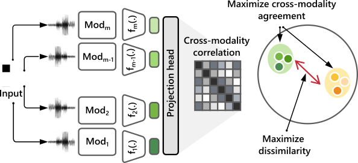

Aaqib Saeed
Researcher | Professor
Decentralized AI, Deep Learning, Self-Learning Sensing Systems
|
|
Electrocardiogram–Language Model for Few-Shot Question Answering with Meta Learning
Jialu Tang, Tong Xia, Yuan Lu, Cecilia Mascolo Aaqib Saeed @ CHIL 2025 We propose a multimodal meta-learning approach that empowers large language models to answer complex clinical questions about ECGs using very limited labeled data. By integrating a pre-trained ECG encoder with a frozen LLM through a trainable fusion module, our method enables robust reasoning over ECG signals. Experiments show strong generalization and high accuracy on diverse ECG question-answering tasks, even in challenging few-shot scenarios. |
|
|
Cardiac and Respiratory Audio Question Answering Model for Open-Ended Diagnostic Reasoning
Tsai-Ning Wang, Lin-Lin Chen, Neil Zeghidour, Aaqib Saeed @ CHIL 2025 Medical audio signals are vital for diagnosis but challenging to analyze due to limited labeled data and reliance on handcrafted features. We present CaReAQA, an audio-language model combining audio understanding with language-based reasoning for open-ended clinical questions. We also introduce CareSound, a benchmark dataset featuring annotated medical audio and paired QA samples to foster diagnostic research. CaReAQA achieves state-of-the-art accuracy in both open- and closed-ended diagnostic tasks, demonstrating strong generalization and potential for AI-powered clinical support. |
 |
Boosting Masked ECG-Text Auto-Encoders as Discriminative Learners
Manh Pham, Aaqib Saeed, Dong Ma @ ICML 2025 We present D-BETA, a novel framework that integrates ECG signals and textual reports for improved cardiovascular diagnostics using cross-modal learning. It leverages a contrastive masked auto-encoder to robustly align physiological and textual data, overcoming modality gaps and data scarcity. By combining generative and discriminative strengths with enhanced loss functions and negative sampling, D-BETA achieves state-of-the-art results. |
 |
Collaboratively Learning Federated Models from Noisy Decentralized Data
Haoyuan Li, Mathias Funk, Nezihe Merve Gürel, Aaqib Saeed @ IEEE BigData 2024 Short Paper @ Data-centric Machine Learning Research - Workshop at ICML We present Federated Noise-Sifting (FedNS), a novel method to tackle noisy input data in federated learning (FL). By analyzing gradient norm distributions, FedNS identifies low-quality client data and adjusts the aggregation process accordingly. Our plug-and-play approach enhances existing FL strategies, significantly improving model performance in both IID and non-IID scenarios. |
 |
Federated Fine-Tuning of Foundation Models via Probabilistic Masking
Vasileios Tsouvalas, Yuki M Asano, Aaqib Saeed @ IEEE BigData 2024 Short Paper @ Foundation Models in the Wild - Workshop at ICML Foundation Models (FMs) have revolutionized machine learning with their adaptability and high performance across tasks; yet, their integration into Federated Learning (FL) is challenging due to substantial communication overhead from their extensive parameterization. We present DeltaMask, a novel method that efficiently fine-tunes FMs in a FL setting at an ultra-low bitrate, well below 1 bpp. Our comprehensive evaluations across various datasets and architectures demonstrate DeltaMask efficiently achieves bitrates as low as 0.09 bpp, enhancing communication efficiency while maintaining FMs performance. |
|
|
On Out-of-Distribution Detection for Audio with Deep Nearest Neighbors
Zaharah Bukhsh, Aaqib Saeed @ ICASSP 2023 Out-of-distribution (OOD) detection is concerned with identifying data points that do not belong to the same distribution as the model's training data. For the safe deployment of predictive models in a real-world environment, it is critical to avoid making confident predictions on OOD inputs as it can lead to potentially dangerous consequences. However, OOD detection remains largely an under-explored area in the audio (and speech) domain. This is despite the fact that audio is a central modality for many tasks, such as speaker diarization, spoken language identification, and sound event detection. To address this, we propose to leverage feature-space of the model with deep k-nearest neighbors to detect OOD samples. |
|
|
The Augmented Image Prior: Distilling 1000 Classes by Extrapolating from a Single Image
Yuki M. Asano*, Aaqib Saeed* @ ICLR 2023 We developed a framework for training neural networks from scratch using a single image by means of knowledge distillation from a supervised pretrained teacher. We demonstrate that it is possible to extrapolate to semantic classes such as those of ImageNet using single datum as models' inputs. We leverage knowledge distillation for this and achieve performances of 74% on CIFAR-100, 69% on ImageNet, 75.2% on UCF-101, 51% on Kinetics-400 and by extending this method to audio, 84% on SpeechCommands. |
|

|
COCOA: Cross Modality Contrastive Learning for Sensor Data
Shohreh Deldari, Hao Xue, Aaqib Saeed, Daniel V. Smith, Flora D. Salim @ ACM IMWUT 2022 - Ubicomp 2022 We propose COCOA (Cross mOdality COntrastive leArning), a self-supervised model that employs a novel objective function to learn high-quality representations from multisensor data by computing the cross-correlation between different data modalities and minimizing the similarity between irrelevant instances. We evaluate the effectiveness of COCOA across a range of datasets and against several self-supervised methods. COCOA is highly label-efficient than the other baselines including the fully supervised model while using only one-tenth of available labeled data. |
 |
Federated Self-Training for Semi-Supervised Audio Recognition
Vasileios Tsouvalas, Aaqib Saeed, Tanir Ozcelebi @ ACM TECS 2022 Short Paper@ IEEE ICASSP 2022 Federated Learning is a distributed machine learning paradigm dealing with decentralized and personal datasets. Since data reside on devices like smartphones and virtual assistants, labeling is entrusted to clients or labels are extracted in an automated way for learning models. However, in the case of audio data, acquiring semantic annotations can be prohibitively expensive and time-consuming. As a result, an abundance of audio samples remains unlabeled and unexploited. We propose FedSTAR, a semi-supervised learning approach for audio recognition. FedSTAR leverages unlabeled data via self-training to improve the generalization of audio models. We show that with as little as 3% labeled data available, FedSTAR on average can improve the recognition rate by 13.28% compared to the fully supervised federated model. We further demonstrate that self-supervised pre-trained models can accelerate the training of on-device models, significantly improving convergence within fewer training rounds. |
 |
Recognizing Head Gestures and Facial Expressions with Earbuds
Shkurta Gashi, Aaqib Saeed, Alessandra Vicini, Elena Di Lascio, Silvia Santini @ ACM ICMI 2021 Head gestures and facial expressions -- like, e.g., nodding or smiling -- are important indicators of the quality of human interactions in physical meetings as well as in a computer-mediated environment. The automated systems able to recognize such behavioral cues can support and improve human interactions. In this work, we consider inertial signals collected from unobtrusive, ear-mounted devices to recognize gestures and facial expressions typically performed during social interactions -- head shaking, nodding, smiling, talking, and yawning. We propose a hierarchical classification approach with transfer learning to improve the generalization and data efficiency of the predictive model using raw IMU data. |

|
Contrastive Learning of General-Purpose Audio Representations
Aaqib Saeed, David Grangier, Neil Zeghidour @ IEEE ICASSP 2021 We introduce COLA, a self-supervised pre-training approach for learning a general-purpose representation of audio. We build on top of recent advances in contrastive learning for computer vision and reinforcement learning to design a lightweight, easy-to-implement self-supervised model of audio. We pre-train embeddings on the large-scale Audioset database and transfer these representations to 9 diverse classification tasks, including speech, music, animal sounds, and acoustic scenes. We show that despite its simplicity, our method significantly outperforms previous self-supervised systems. |
|
Learning from Heterogeneous EEG Signals with Differentiable Channel Reordering
Aaqib Saeed, David Grangier, Olivier Pietquin, Neil Zeghidour @ IEEE ICASSP 2021 We propose CHARM, a method for training a single neural network across inconsistent input channels. Our work is motivated by Electroencephalography (EEG), where data collection protocols from different headsets result in varying channel ordering and number, which limits the feasibility of transferring trained systems across datasets. CHARM is differentiable and compatible with architectures (e.g. CNNs) that expect consistent channels. Across different input noising conditions we show its robustness. We also successfully perform transfer learning between datasets collected with different EEG headsets. |
|

|
Sense and Learn: Self-Supervision for Omnipresent Sensors
Aaqib Saeed, Victor Ungureanu, Beat Gfeller @ Machine Learning with Applications Looking for a way to utilize large-scale unlabeled sensory (time-series) data to improve generalization on downstream task with few-labeled datapoints? Try: Sense and Learn, a self-supervised learning framework. We propose a suite of self-supervised pretext tasks for pre-training deep neural networks without semantic labels. We evaluate the quality of learned embedding with our framework on a wide variety of end-tasks with a linear classifier on top of a fixed encoder, effectiveness in the low-data regime, and transfer learning. Our approach opens up exciting possibilities for on-device continual learning without requiring supervision. |
|
Federated Self-Supervised Learning of Multi-Sensor Representations for Embedded Intelligence
Aaqib Saeed, Flora D. Salim, Tanir Ozcelebi, Johan Lukkien @ IEEE Internet of Things Journal 2020 We present a self-supervised method for learning multi-sensor representations in a federated learning setting from unlabeled and decentralized data. Our scalogram-signal correspondence learning (SSCL) technique utilize wavelet transform and a contrastive objective for training the deep network to determine if a given pair of a signal and its complementary view (i.e., a scalogram generated with wavelet transform) align with each other or not. We extensively assess the quality of learned features with SSCL on diverse public datasets, which comprise signals like electroencephalography, blood volume pulse, accelerometer, and Wi-Fi channel state information. We conduct experiments to demonstrate our approach's effectiveness in both centralized and federated settings through linear classification. Mainly, SSCL significantly improves generalization in the low-data regime by reducing the volume of labeled data required through leveraging self-supervised learning. |
|

|
Multi-Task Self-Supervised Learning for Human Activity Detection
Aaqib Saeed, Tanir Ozcelebi, Johan Lukkien @ IMWUT June 2019- Ubicomp 2019 Workshop Paper@ Self-supervised Learning Workshop ICML 2019 We've created a Transformation Prediction Network, a self-supervised neural network for representation learning from sensory data that does not require access to any form of semantic labels, e.g., activity classes in human context detection. We demonstrate that simple auxiliary tasks of recognizing signal transformations result in strong supervision for extracting high-level features that generalize well on the down-stream task; substantially improving performance under semi-supervised and transfer learning settings in the low-data regime. |